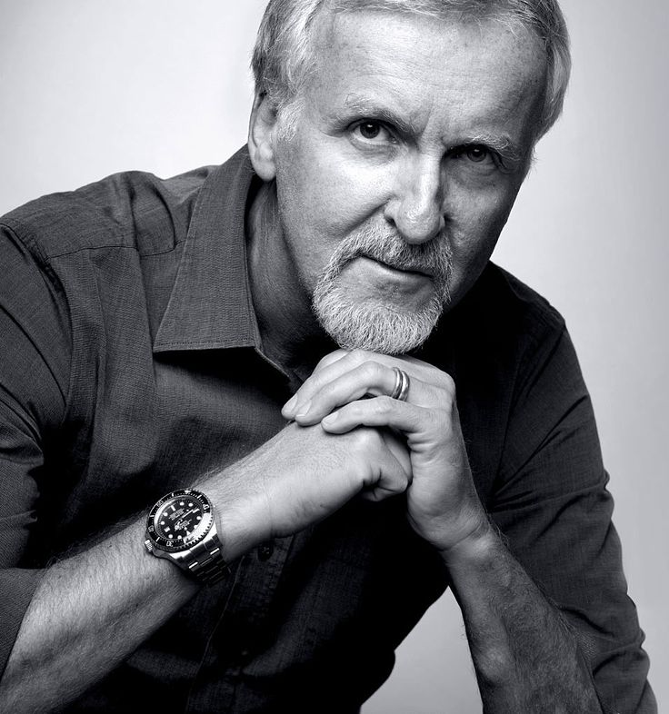
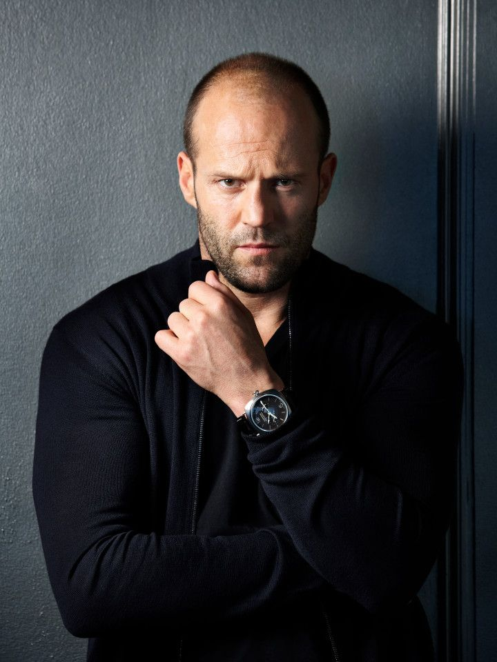

Veen.

Hans zimmer - August 15, 2025
A mountain is a large landform that rises above the sorrounding land in a limited area, useally...

James camaron - July 12, 2025
Welcome It's great to have you here. We know that first impressions are important, so we've populated...
Mary bazard - october 18, 2025
It was one of the worst storms to hit London since God knows when. The thunder rolled...

John william - August 19, 2025
In keeping with the biomedical perspective, early definitions of health focused on the theme of the body's...

Christoper nolan - November 02, 2025
A mountain is a large landform that rises above the sorrounding land in a limited area, useally...

Jason statham - May 01, 2025
Welcome It's great to have you here. We know that first impressions are important, so we've populated...
Tom cruize - March 15, 2025
In keeping with the biomedical perspective, early definitions of health focused on the theme of the body's...
Dwayne johnson - April 12, 2025
It was one of the worst storms to hit London since God knows when. The thunder rolled...